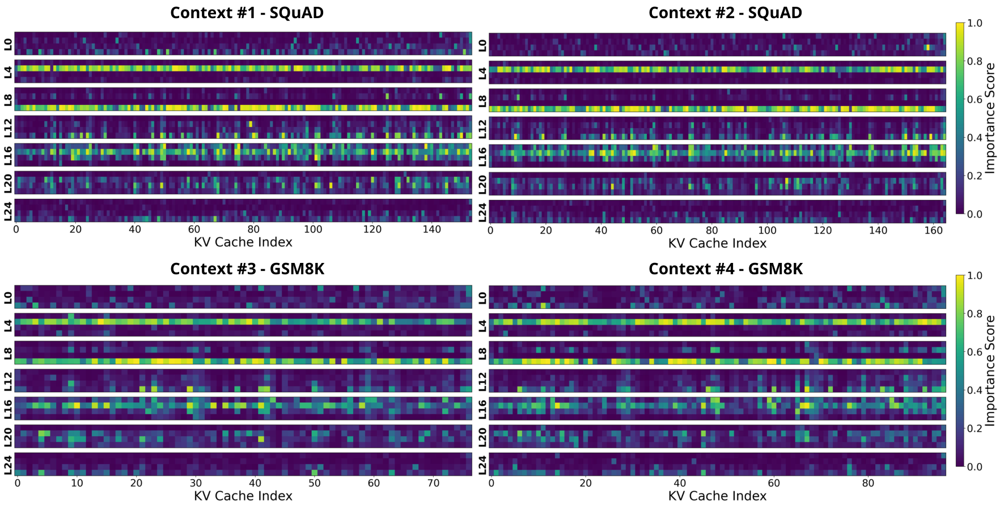
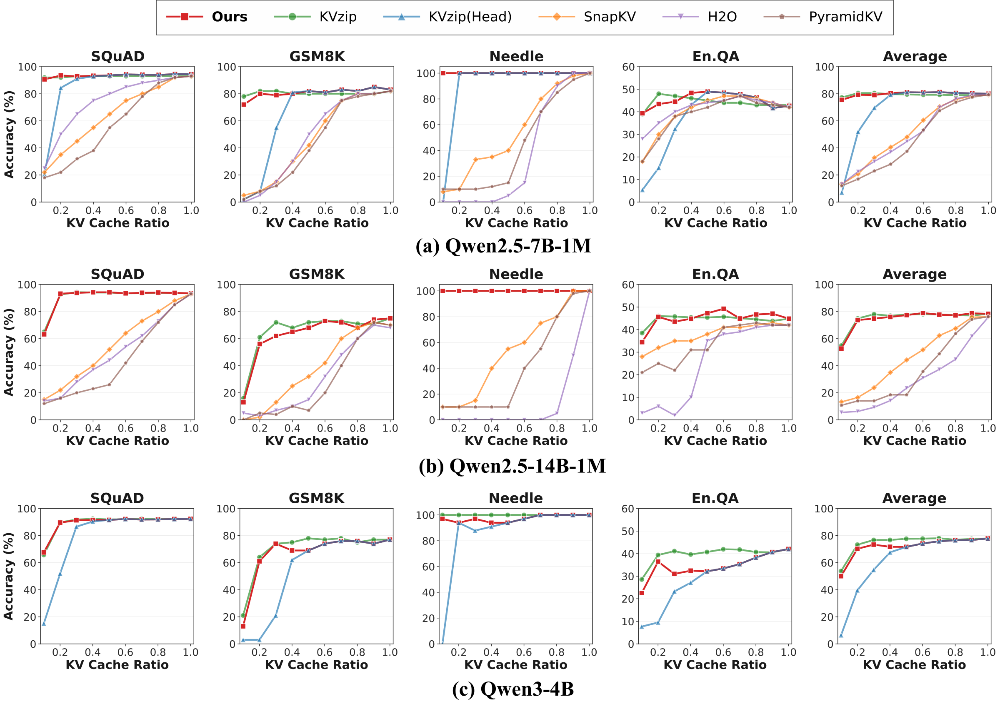
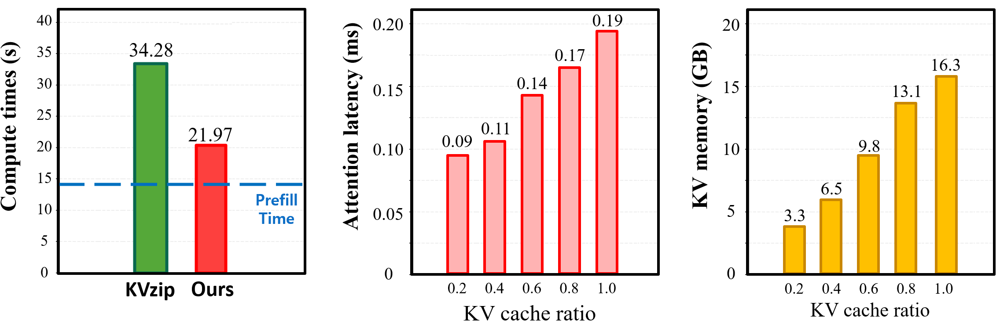

Pre-select a fraction k of salient heads from a tiny calibration set.
Drop pruned heads, then reconstruct-and-prune tokens only within retained heads.
Query-agnostic: one compressed cache reused across many queries.

